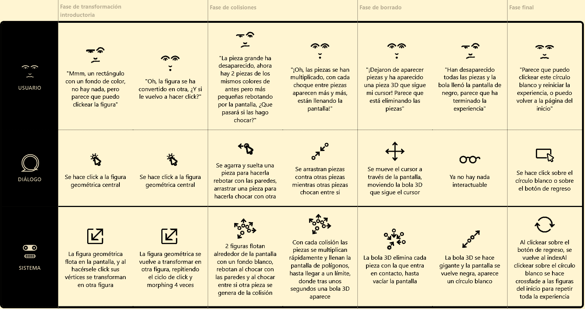

Geometrías Inestables nace en el Taller de Diseño de Interacción 2026, donde se diseñó el juego de mesa "Zona Inestable", un juego diseñado para crear tensión en los jugadores durante sus diferentes fases de juego, desde el cuidadoso ensamblado de la estructura y colocación de sus piezas para no botar la estructura al momento de armarla, y el posterior derribo de las piezas con las herramientas, con la precaución de no provocar el derrumbe de las plataformas y la estructura.
Durante la primera fase del juego, los jugadores deberán ensamblar cada plataforma, uniendo la superficie hexagonal al pilar de soporte, y el pilar a la base circular. Es posible armar hasta 7 plataformas, poniéndolas todas al mismo nivel, o colocando algunas sobre otras, dando así la libertad a los jugadores de elegir ellos mismos la estructura en la que jugarán. Dependiendo de la estructura que los jugadores elijan construir, el juego posterior variará su dificultad.
Una vez lista la estructura, los jugadores deberán colocar sobre las plataformas las distintas piezas de color disponible, habiendo un total de 32 piezas normales (8 de cada color) y 8 piezas especiales (2 de cada color). Las piezas especiales, al esperarse que sean más difícil de conseguir, deberán ser colocadas más cerca del centro que las piezas normales. Cuando todas las piezas de colores estén colocadas sobre la estructura, los jugadores deberán sortear el color que le tocará a cada uno.
Haz clic sobre el modelo para modificar la estructura


Al iniciar su turno, cada jugador deberá girar una ruleta que le indicará con qué mano y con qué herramienta deberá jugar.
El objetivo del jugador será derribar las piezas que no sean del color que le haya tocado, donde una pieza normal vale 1 punto y una pieza especial vale 2, y deberá hacerlo con el cuidado de no botar las plataformas de la estructura, pues eso le significará la descalificación del juego.
Al finalizar el juego, se hará el recuento de las piezas totales de todos los jugadores, descontando de su puntaje las piezas que hayan derribado que sean de su color propio.
El jugador con mayor puntaje será declarado el ganador de la partida.


Puedes revisar el proyecto a fondo en Casiopea
Uno de los aspectos más importantes y esenciales en Zona Inestable es el contacto directo entre las distintas piezas del juego, como el contacto entre las partes ensambladas de la estructura, y el contacto que debe realizar el jugador con la caña para derribar las piezas de las plataformas, pues de la única forma en el que un turno será contado como válido, será si el jugador logra impactar alguna pieza con la herramienta, independiente de si la pieza es derribada fuera de la estructura o no.
Para esta página exploratoria interactiva se ha tomado específicamente este aspecto de colisiones entre piezas, tomando polígonos planos como representaciones de los elementos físicos, como un rectángulo largo por el pilar, un hexágono por la plataforma, un rectángulo pequeño por la pieza común y un rectángulo con punta por la pieza especial, y junto a estos se ha decidido mantener la paleta de colores rosa, celeste, carmesí y amarillo para mantener todo en un orden de 4 elementos diferentes que dialogan entre si , 4 polígonos de 4 colores distintos que chocan entre si para hacer aparecer más y más polígonos. Y en contraste a esta cualidad "creadora" que se le ha impuesto a los polígonos coloridos, se ha agregado un elemento 3D esférico negro, que representa la bola de demolición de la herramienta en el juego físico, otorgándole a este elemento que rompe con la armonía de los 4 elementos anteriores de una característica "destructora", pues se ingresa a la experiencia para deshacer todo lo generado entre los polígonos.
Desde el flujo de juego original se toma la fase de ensamblado de la estructura y colocación de piezas, y derribo de piezas y destrucción de la estructura, para traspasarlo a la experiencia digital a través de una constante colisión de elementos poligonales y de contrastes de colores y formas. El objetivo es explorar las relaciones geométricas que se generan durante el juego a través de las interacciones físicas entre las piezas: los impactos, colisiones y choques, el agregar y el eliminar de los elementos.
